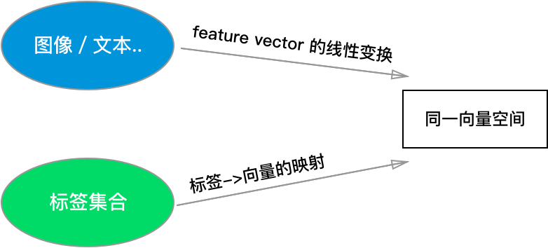

WSABIE 算法解释

算法论文：WSABIE: Scaling Up To Large Vocabulary Image Annotation
介绍
WSABIE 是一个通用的打标签算法，无论对象是图像，视频，还是文本，只要能抽取出 feature，并提供一个固定的标签集合，就可以使用 WSABIE，由于算法的通用性，下文将需要打标签的东西称为 对象。
模型
1. Joint Word-Image Model
对于 WSABIE 来说，打标签的过程，就是计算所有标签与当前对象的相似性，并取出相似性最高的标签作为结果。由于对象的 feature 和标签是两种不同的东西，为了计算相似性，WSABIE 将它们映射到 同一个向量空间 \( R^D \) 。

为了将对象 \(I\) 的 feature vector \( x \) 映射到 \( R^D \)，只需做线性变换 \( \Phi _I(x)=Vx \)，其中 \(V\) 是变换矩阵。
由于标签是离散的符号，为了将其映射到 \( R^D \)，需要采用 Word2Vec 一样的思想，把它们转换成 embedding，换言之，我们把所有标签（假设有 \(N\) 个)对应的向量存在矩阵 \(W\) （大小 \(D \times N\)）中，第 i 个标签就是矩阵的第 i 列： \( \Phi _W(i)=W_i \)
于是，对象 \( I \) 与第 i 个标签的相似度就是：
\[ f_i(x) = \Phi _W(i)^T \Phi _I(x)=W_i^TVx \]
模型中的待学习参数为线性变换矩阵 \(V\)，以及所有标签的 embedding 向量 \(W\)。
2. 损失函数
每条训练数据都以 \( (x,y) \) 的形式存在，其中 \(x\) 是对象，\(y\) 是它唯一的一条正确的标签。
模型的优化目标，是让正确描述对象的标签，与对象有较高的相似度。更具体地说 \[ rank_y(f(x)) = \Sigma _{i \ne y} I(f_i(x) \ge f_y(x)) \]
这个式子表示 "排名大于 \(y\) 的标签的个数"（\(I\) 是示性函数)，这条训练数据的误差是
\[ L(rank_y(f(x)))\]
其中
\[ L(k) = \Sigma _{j=1}^k \alpha_j \]
根据常数 \( \alpha_j \) 的取值的不同，我们可以得到不同的损失函数，所以 \( L \) 其实代表一类函数。
如果 \( \alpha_j \) 取值都为 \(C\)， 那么如果 \(y\) 被模型排到第 \(k\) 名，损失值就是 \(Ck\)。论文中 \( \alpha_j = 1/j \)。
学习
WSABIE 对损失函数进行了一系列近似，让模型能够使用随机梯度下降（SGD）在线更新参数，这个学习算法是本文 最有价值的部分。下面依次介绍近似步骤：
1. 改写损失函数
\[ err(f(x), y) = L(rank_y(f(x)) \frac{rank_y(f(x))}{rank_y(f(x)) }\]
\[ =L(rank_y(f(x)) \frac{\Sigma_{i\ne y}I(f_i(x) \ge f_y(x))}{rank_y(f(x)} \]
\[ =\Sigma_{i \ne y} L(rank_y(f(x)) \frac{ I(f_i(x) \ge f_y(x))}{rank_y(f(x)} \]
2. 近似损失函数
使用 hinge loss 近似 0／1 损失函数，得到如下的近似损失：
\[ \overline{err}(f(x), y)=\Sigma_{i \ne y} L(rank_y^1(f(x)) \frac{ |1-f_y(x)+f_i(x)|_+}{rank_y^1(f(x))} \]
其中：
\[
rank_y^1(f(x))=\Sigma_{i\ne y}I(1+f_i(x) \ge f_y(x))
\]
使用这个近似的损失函数，得到在当前数据集分布的期望误差：
\[Risk(f)=\int\overline{err}(f(x), y)dP(x,y)\]
按照分布 \(P(x,y)\) 随机选择一个样本 \((x,y)\)，计算其 \(\overline{err}(f(x), y)\)，可以对这个期望误差进行估计。
实际上
\[ \Sigma_{i\ne y}\frac{ |1-f_y(x)+f_i(x)|_+}{rank_y^1(f(x))} \]
这个值，也可以通过采样进行估计，方法为，从满足 \( 1-f_y(x)+f_i(x) > 0 \) 的所有标签中，随机采样一个 \(\overline{y}\)，计算 \( 1-f_y(x)+f_{\overline{y}}(x) \)
综上，总共两步采样：
- 随机选一个 \((x,y)\)
- 随机选一个标签 \( \overline{y} \)
得到 \(Risk(f)\) 的一个估计：
\[ \overline{err}(f(x),y,\overline{y})=L(rank_y^1(f(x))(1-f_y(x)+f_{\overline{y}}(x))\]
3. 随机梯度下降
接下来，就应用标准的随机梯度下降法，通过对 \(Risk(f)\) 的估计 \(\overline{err}(f(x),y,\overline{y})\) 求梯度，优化损失函数：
\[ \beta_{t+1}=\beta{t}-\gamma_t \frac {\partial\overline{err}(f(x),y,\overline{y})} {\partial\beta_{t}}\]
其中 \(\beta\) 是模型参数，也就是 \(W\) 和 \(V\) 矩阵。
4. 进一步优化性能
此时，每一步优化的性能还是不好，原因是计算 \(\overline{err}(f(x),y,\overline{y})\) 时，我们需要知道所有满足 \( 1-f_y(x)+f_i(x) > 0 \) 的标签，因为：
- 计算 \(L(rank_y^1(f(x))\) 要用到（记得那个求和式子吗）
- 采样的第二步要用到（因为要从这些标签里采样）
论文中第 最聪明的地方 来了，作者提出了一个近似 \(\overline{err}(f(x),y,\overline{y})\) 的方法，解决以上两个问题：
在第二步的采样中，不再从满足 \( 1-f_y(x)+f_i(x) > 0 \) 的标签里采样，而是从 除去 \(y\) 的所有 标签里进行采样，如果采样到的标签 i 不满足 \( 1-f_y(x)+f_i(x) > 0 \)，就把它放回，再次采样，直到找到满足条件的标签为止。
表面上，这解决了第二次采样的问题，这种有放回采样的效果，等价于原来的采样，而且不需要事先算出所有满足条件的标签。
但实际上，这也解决了第一个问题。假设一共有 \(k\) 个标签满足 \( 1-f_y(x)+f_i(x) > 0 \)，那么，从所有标签中采样到这种标签的概率就是 \(P=\frac{k}{N－1}\)，由于这种有放回采样满足 几何分布 （还记得大学概率课吗？一直投骰子，直到遇到6），所以期望的采样次数为：
\[ E[采样次数] = \frac{N-1}{k} \]
我们可以用实际的采样次数近似期望的采样次数，所以我们可以近似得到 \(k\) 的值为 \( \frac{N-1}{采样次数} \)，于是可以算出 \(L(rank_y^1(f(x))\) 的近似值。
其它讨论
此外，论文还对 \(W\) 和 \(V\) 每一列的大小做了约束：
\[ ||W||_2 <= C,||V||_2 <= C \]
在优化时，如果某一列超过了 C，就将该列的值等比例缩小一下。
如果理解了后续的采样步骤，就会理解对损失函数的近似步骤：
之所以将 0/1 loss 近似为 hinge loss，是为了让损失函数连续，之所以用 \(rank_y^1(f(x),y) \) 替换 \(rank_y(f(x),y) \) ，是为了在第二步采样时去掉分母
在训练过程的每一步，都仅涉及一个训练数据 \((x,y)\)，以及后续的几条采样数据，这种 online learning 的学习方法适用于海量数据集。
实际应用中，每个对象会有 多个标签，在训练时，可以针对每个标签单独跑一次采样，
此外，我还有一个想法，模型中的输入 feature 已经是计算好了的，我们也可以把原始的数据直接放入模型，例如，利用 NN 自动学习出特征，实现 end-to-end 的打标签架构。
算法名字很像"芥末"，所以文章的开头我放了芥末。